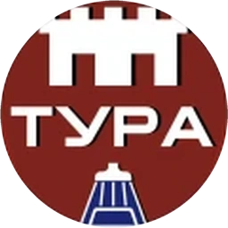
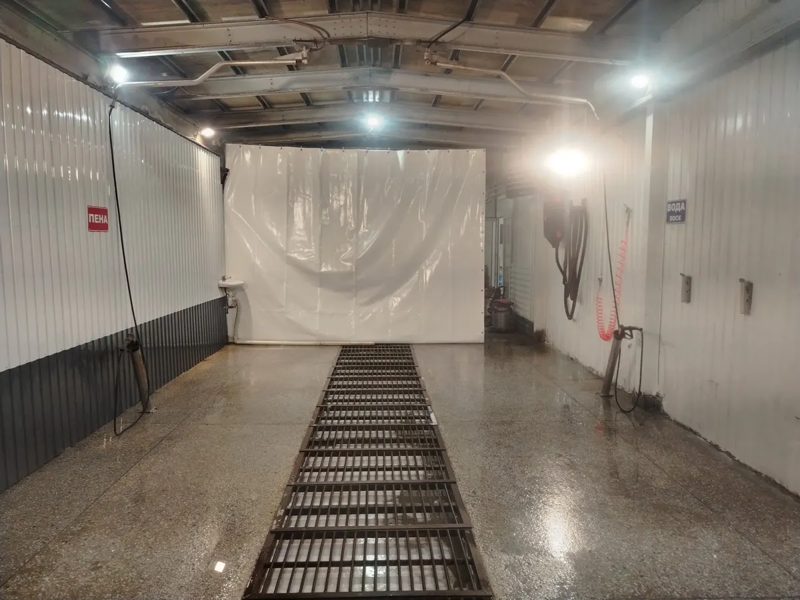
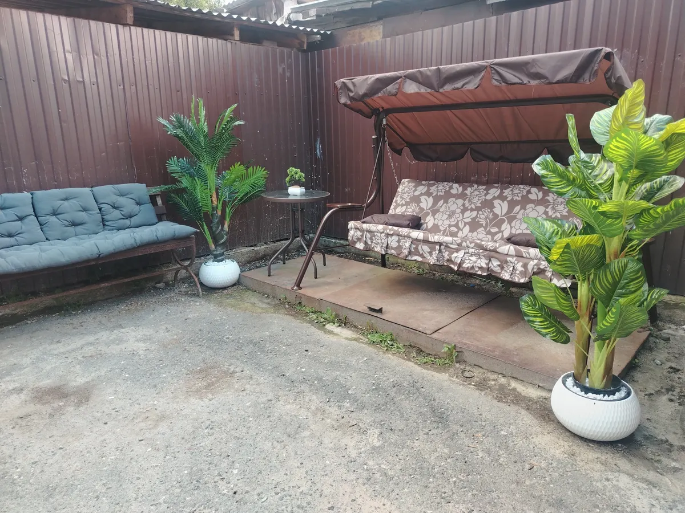
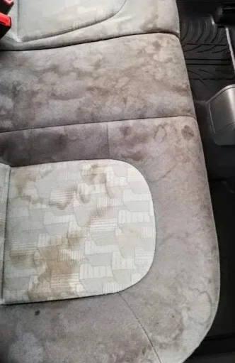
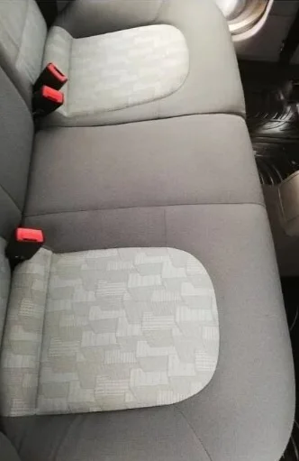

Экспресс
от400₽
- Мойка кузова без химии и сушки

ТураАвтомойка, шиномонтаж, химчистка салона
Посты самообслуживания и бокс с мойщиком, шиномонтаж и химчистка салона. Выберите услуги, день и время, заявка уйдёт в мессенджер.
4,3 на Яндекс.Картах · 37 отзывов
Цены взяты с карточки на Яндекс.Картах, она давно не обновлялась, сумму уточняйте по телефону. Нажмите «В заявку», и услуга попадёт в форму записи.
от400₽
850₽
1 250₽
Отдельно: химчистка салона, шиномонтаж
Посты с пеной и водой под давлением. В отзывах хвалят напор воды и пену.

8 000₽
Что входит в химчистку, уточняйте по телефону.
Смотреть до и после1 600₽
Цена мойки самообслуживания на карточке не указана, её подскажут по телефону. Цены мойки на карточке даны для «1 категории авто».

Бокс с мойщиком и посты самообслуживания: выбираете, как удобнее.
Диван и качели на улице, кофе-аппарат внутри. В отзывах хвалят место ожидания.
На карточке отмечено: разрешено с кошками и собаками.
Колёса и салон на той же площадке, цены в прайсе выше.
Реальные фото с карточки на Яндекс.Картах. Нажмите на снимок, чтобы открыть крупно.
Сиденье до и после чистки, фото с карточки на Яндекс.Картах. Чем именно чистили и сколько это заняло, уточняйте по телефону.

До
ПослеМойка, химчистка салона, шиномонтаж: любое число, можно все сразу.
Время – ваше пожелание, а не подтверждённая запись.
Готовый текст уходит в WhatsApp или Telegram, номер как на карточке.
Интернациональная улица, 75. Ежедневно с 9:00 до 22:00.
4,337 отзывов
Читать все отзывы на Яндекс.Картах«Помыли отлично, для комплекса, не дорого. Главное можно по записи. Рекомендую»
Наталья К. · 13 мая
«Отличная мойка, обслуживание супер, персонал приветливый, моют быстро и качественно!»
Александр Е. · 30 декабря 2025
«Отличная мойка! Можно записаться или воспользоваться мойкой самообслуживания, 2 поста. Рекомендую!»
Виктория Т. · 3 декабря 2023
Отзывы с карточки на Яндекс.Картах, без правок.
Да, на карточке отмечена предварительная запись. Время в форме – пожелание: окончательно договариваетесь в переписке.
На табличке у поста написано: не более 20 минут.
Ежедневно с 9:00 до 22:00 по данным карточки. В праздничные дни лучше позвонить и уточнить.
На карточке отмечено: разрешено с кошками и собаками.
Интернациональная улица, 75, Тюмень. Рядом Сквер Авиаторов (114 м по данным карточки).
Карта не загрузилась. Адрес и маршрут можно открыть в Яндекс.Картах.
Текст скопирован – вставьте его в чат.